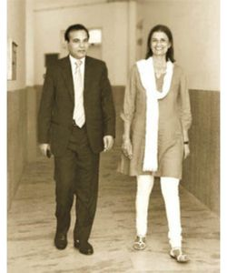

“Education educates a man, but good education creates a man” is the belief of NJR Foundation which established Techno India NJR Institute of Technology in the year 2008.NJR Foundation, a registered trust, was established in the year 2003 in memory of Shri Navdeep Ranawat and Shri Jitendra Ranawat by Mrs. Meera Ranawat and Mr. Raj Shekhar Vyas, an alumnus of BITS, Pilani having more than 25 years of experience with Tata group and as Techno entrepreneur. Nine more highly qualified trustees with vast experience in the field of law, administration, finance research papers writing and business were inducted subsequently.Techno NJR was set up with a vision of providing international level engineering education to students of Udaipur so that they do not have to travel to Banglore, Pune, Jaipur for good engineering education.
To provide highly affordable world-class engineering education to the students of this region.
- To increase industry partnerships and industry alignment so that students are industry-ready by the time they complete the course. This will include outcome-based education, industry certifications and courses, Project-based learning, internships, participation in Hackathons etc. Students will be provided with the opportunity to work in the industry in 7th and 8th semester (on the lines of Practice School at BITS).
- To focus on FDP’s, Research papers and patents by faculty, faculty visits to universities in India and abroad for joint research and projects. the college will substantially finance these activities. Academic leave will be granted to faculty pursuing PhD when required so that most faculty complete their PhD in next 5 years.
- Techno India NJR has been founded by 2 Founder Trustees – one a housewife who lost her only child and husband and another a BITS Pilani graduate. The institute therefore will continue to emphasize Philanthropic activities in memory of departed souls and implement best practices of eminent Institutes like BITS.
- In addition to 5% seats allocated by the Institute under the Tuition Fees Waiver Scheme (TFWS), Institute will continue to increase its allocation for Fee’s concessions (under various heads up to 100% fees waiver) from the present level of around 10% of the revenue (between 40-50 lakh per annum) to around 25% of revenue in next 10years so that bright students from needy families get a chance to undertake engineering education.
- To invest 80% of its surplus (Income minus expenditure) in upgradation of its infrastructure for implementing new technologies.
- To create more incubation centres within the campus from 2 at present to 5 in next 5 years to promote Start-up culture in the institute. The institute will also invest up to 10% in the equity of the institute Start-ups.
Techno India NJR has been founded by 2 Founder Trustees – one a housewife who lost her only child and husband and another a BITS Pilani graduate. The college therefore will continue to emphasize Philanthropic activities in memory of departed souls and implement Best practices of eminent Institutes like BITS.
- In addition to 5% seats allocated by the Institute under the Tuition Fees Waiver Scheme( TFWS), the Institute will continue to increase its allocation for Fees concessions under various heads up to 100% fees waiver from the present level of around 10% of the revenue ( between 40-50 lakh per annum) to around 25% of revenue in next 10 years so that bright students from needy families get a chance to undertake engineering education.
- Institute has been investing 80% of its surplus ( Income minus expenditure) in the up-gradation of its infrastructure for implementing new technologies and will continue to do so in the future. The college will create more incubation centers within the campus from 2 at present to 5 in the next 5 years to promote Startup culture in the college. The college will also invest up to 10% in the equity of college startups.
- As the course curriculum is designed by the University which generally lags behind advances in technology, the college will continue to teach new relevant technologies outside the curriculum and devote at least 25% of student’s time outside the prescribed curriculum.
- Focus in the next few years will be to increase industry partnerships and industry alignment so that students are industry-ready by the time they complete the course. This will include industry certifications and courses, Project-based learning, internships, participation in Hackathons, etc. Students will be provided with the opportunity to work in the industry in the 7th and 8th semester ( on the lines of Practice School at BITS)
- Faculty is the biggest strength of this college. There will be more focus on FDP’s, Research papers and patents by faculty, faculty visits to universities in India and abroad for joint research and projects. the college will substantially finance these activities. Academic leave will be granted to faculty pursuing Ph.D. when required so that most faculty complete their Ph.D. in the next 5 years.
Greatest reward as founders of Techno India NJR has been steady progress the college has made in establishing itself as one of the finest institutions of learning in Rajasthan . Our next goal will be to establish its presence on national level. We feel proud of the achievements of our college through collective efforts of our faculty and students and they deserve our heartfelt gratitude.
Techno India NJR has created an exciting but disciplined student-centric environment of academic excellence reflected in academic results and great placements year after year. Our engineering program links knowledge to practice and skill from the very beginning which makes it easy for students to transition to a successful working professional in later life. In addition to maintaining the high academic standards, most students go through industry certifications and internships to give them real-life feel of technology.
